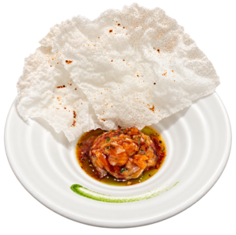
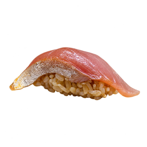
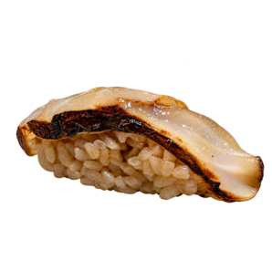
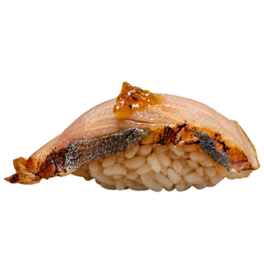
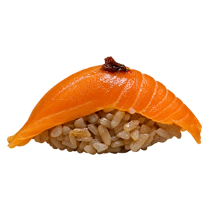
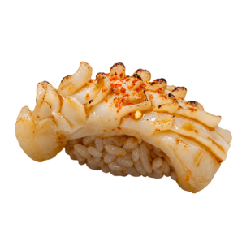
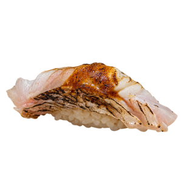
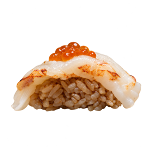
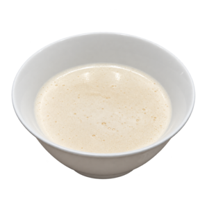
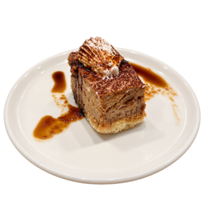

Tartar de salmón marinado con ponzu, aceite de sésamo y un toque cítrico.Salmón cortado a cuchillo y marinado con ponzu, aceite de sésamo y un toque cítrico. Se acompaña con aceite de ciboulette y una suave crema de palta. Una lámina de arroz crocante, modelada al calor del soplete, aporta volumen y textura.
Alérgenos: pescado, soja, sésamo y gluten.

Aji japonés ligeramente curado con sal y cítricos, de sabor fresco y delicadamente intenso. Se sirve sobre arroz koshihikari condimentado con una mezcla especial de vinagres, responsable de su tono ambarino. Terminado con salsa nikiri y jengibre rallado.
Alérgenos: pescado, soja y gluten.

Vieira tierna, marcada al fuego para potenciar su dulzor natural y lograr un suave sabor ahumado. Se presenta sobre arroz koshihikari avinagrado y se termina con una pincelada de miso blanco caramelizado.
Alérgenos: moluscos, soja y gluten.

Caballa curada con vinagre de arroz y alga kombu para equilibrar su sabor intenso. La superficie se flamea ligeramente y se acompaña con una reducción de soja dulce. Servida sobre arroz koshihikari con mix de vinagres.
Alérgenos: pescado, soja y gluten.

Una lámina de salmón fresco sobre arroz koshihikari de sabor profundo y ligeramente ácido. Se termina con salsa nikiri y un pequeño toque picante que realza la suavidad del pescado.
Alérgenos: pescado, soja y gluten.

Besugo de carne blanca y suave, flameado para conservar su delicadeza y aportar notas ahumadas. Se sirve sobre arroz koshihikari y se termina con una fina capa de miso dulce y limón.
Alérgenos: pescado, soja y gluten.

Calamar delicadamente marcado para lograr una textura tierna y un acabado ligeramente tostado. Se condimenta con aceite de sésamo, shichimi y unas gotas de limón. Acompañado por arroz koshihikari preparado con nuestro mix de vinagres.
Alérgenos: moluscos, soja, sésamo y gluten.

Langostino ligeramente sellado y servido sobre arroz koshihikari avinagrado. Se corona con huevas de salmón —ikura— y unas gotas de aceite de limón, combinando sabores dulces, salinos y cítricos.
Alérgenos: crustáceos, pescado, soja y gluten.

Sopa suave elaborada con pescado blanco, caldo dashi, puerro, jengibre y miso blanco. Su textura cremosa se obtiene mediante una emulsión delicada, sin perder la intensidad marina del caldo.
Alérgenos: pescado y soja.

Mousse de chocolate y té hojicha sobre una base de bizcocho de sésamo. Se acompaña con crema tostada y una salsa de caramelo con miso, que aporta un delicado contraste entre dulzor y salinidad.
Alérgenos: leche, huevo, gluten, soja y sésamo.